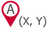
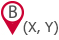

<div class="dijitDialog DialogContainer" style="z-index:11111;" data-dojo-attach-point="dialogContainer">
	<div data-dojo-attach-point="titleBar" class="DialogTitleBar">
		<span data-dojo-attach-point="titleBarImage" class="DialogTitleBarImage">.</span>
		<span data-dojo-attach-point="titleBarText" class="DialogTitleBarText">{0}</span>
		<span data-dojo-attach-point="closeIcon" class="DialogCloseIcon" data-dojo-attach-event="onclick: _onCrossClick" title="{%closeBtnTitle%}" role="button" tabindex="0">
			<span data-dojo-attach-point="closeText" class="closeText" title="{%closeBtnTitle%}">x</span>
		</span>
	</div>
	<div class="dijitDialogPaneContent DialogPaneContent" data-dojo-attach-point="paneContent">
		<div class="MeasureTitle">{%measDialInfo%}</div>
		<div>
			<table>
				<tr>
					<td></td>
					<td><span id="startPointX" data-dojo-attach-point="startPointXNode" data-type="readonly_input"></span></td>
					<td><span id="startPointY" data-dojo-attach-point="startPointYNode" data-type="readonly_input"></span></td>
					<td><div id="resetX" data-dojo-attach-point="resetXNode" class="Delete"></div></td>
				</tr>
				<tr>
					<td></td>
					<td><span id="endPointX" data-dojo-attach-point="endPointXNode" data-type="readonly_input"></span></td>
					<td><span id="endPointY" data-dojo-attach-point="endPointYNode" data-type="readonly_input"></span></td>
					<td><div id="resetY" data-dojo-attach-point="resetYNode" class="Delete"></div></td>
				</tr>
				<tr>
					<td colspan="4" style="height: 1px;">
						<div class="Hr"></div>
					</td>
				</tr>
				<tr class="CalculatedFields Disabled">
					<td>{%measDialDifferenceLabel%}</td>
					<td><span id="differenceX" data-dojo-attach-point="differenceXNode" data-type="readonly_input"></span></td>
					<td><span id="differenceY" data-dojo-attach-point="differenceYNode" data-type="readonly_input"></span></td>
					<td></td>
				</tr>
				<tr class="CalculatedFields Disabled">
					<td>{%measDialDistanceLabel%}</td>
					<td colspan="2"><span id="straightLine" data-dojo-attach-point="straightLineNode" data-type="readonly_input"></span></td>
					<td></td>
				</tr>
				<tr>
					<td colspan="4" style="height: 1px;">
						<div class="Hr"></div>
					</td>
				</tr>
				<tr>
					<td colspan="4">
						<span class="UnitsLabel">{%measDialUnitsLabel%}</span> <span id="unitsPlaceHolder" data-dojo-attach-point="unitsPlaceHolderNode"></span>
						<span class="ScaleLabel">{%measDialScaleLabel%}</span> <span id="scalePlaceHolder" data-dojo-attach-point="scalePlaceHolderNode"></span><span>{%measDialXLabel%}</span>
					</td>
				</tr>
				<tr>
					<td colspan="4" align="center" style="height: 30px; vertical-align: top;">
						<div id="recordMeasurement" data-dojo-attach-point="recordMeasurementNode" class="Blue" disabled="disabled">{%measDialRecordMeasurementBtn%}</div>
						<div id="reset" data-dojo-attach-point="resetNode" class="Grey">{%measDialResetBtn%}</div>
					</td>
				</tr>
			</table>
		</div>
	</div>
</div>